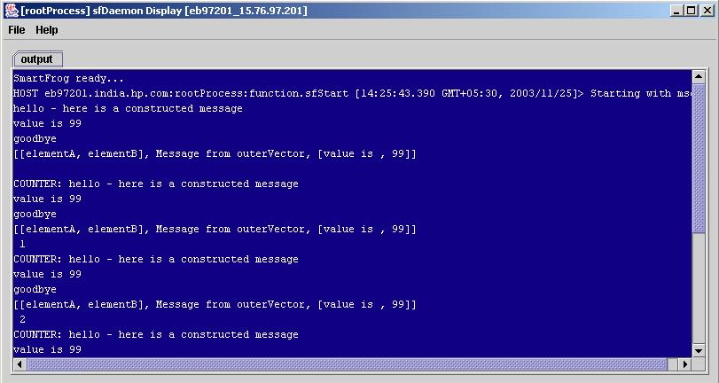

Goal of the example:
This example shows the use of functions through a counter implementation.
Internal Functionality:
The functions example implements a counter where the attribute "message" obtains the value of the evaluated concat function.The attributes of the concat function further evaluate their values through concat, sum and vector functions. The description file function.sf describes these functions.
Steps to run the example:
- Start daemon
on
localhost
- Start function.sf
- Stop daemon
Expected Output:
